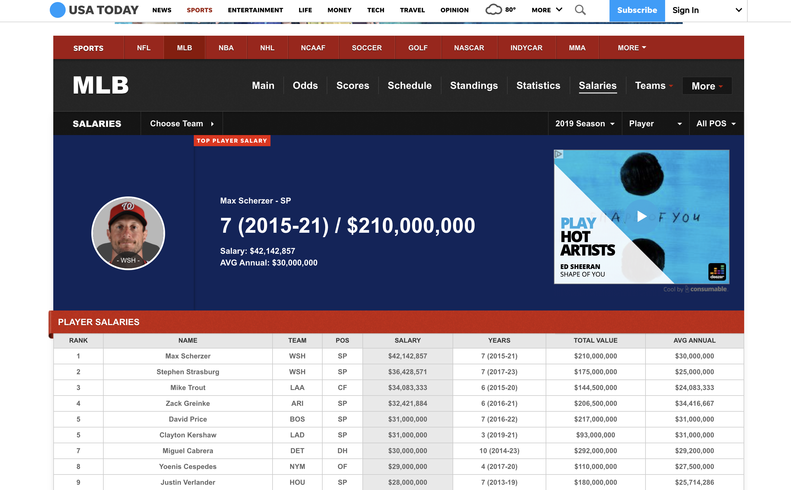

Area Between Curves and Application to Equality¶
import matplotlib.pyplot as plt
import numpy as np
import scipy.stats as stats
import pandas as pd
from scipy.integrate import quad
#define the functions and domain
#examine a plot
#find the area between
#area function
#determine the area
Many Regions¶
An example from the 2015 AP CALCULUS AB exam follows:
Let \(f\) and \(g\) be the functions defined by \(f(x) = 1 + x + e^{x^2 - 2x}\) and \(g(x) = x^4 - 6.5x^2 + 6x + 2\). Let \(R\) and \(S\) be the two regions enclosed by the graphs of \(f\) and \(g\) shown in the figure below.
a. Find the sum of the areas of regions \(R\) and \(S\).
#define the functions
def f(x): return 1 + x + np.e**(x**2 - 2*x)
def g(x): return x**4 - 6.5*x**2 + 6*x + 2
#define domain
x = np.linspace(0, 2, 100)
#plot the regions, fill, add labels
plt.plot(x, f(x))
plt.plot(x, g(x))
plt.fill_between(x, f(x), g(x), color = 'gray', alpha = 0.5)
plt.text(0.5, 2.5, 'R')
plt.text(1.5, 2.5, 'S');
#plot the difference
plt.plot(x, f(x) - g(x))
plt.axhline(color = 'black')
plt.title('Finding Where Difference is Zero');
from scipy.optimize import root_scalar
def difference(x): return f(x) - g(x)
root_scalar(difference, bracket = [.75, 1.25], method = 'bisect')
converged: True
flag: 'converged'
function_calls: 40
iterations: 38
root: 1.032831888363944
roots = root_scalar(difference, bracket = [.75, 1.25], method = 'bisect')
roots.root
1.032831888363944
plt.plot(x, f(x) - g(x))
plt.axhline(color = 'black')
plt.title('Finding Where Difference is Zero');
plt.plot(roots.root, difference(roots.root), 'ro');
plt.plot(x, f(x))
plt.plot(x, g(x))
plt.plot(roots.root, f(roots.root), 'ro')
[<matplotlib.lines.Line2D at 0x7fd0b8d7eca0>]
def R(x): return g(x) - f(x)
def S(x): return f(x) - g(x)
area_R = quad(R, 0, roots.root)[0]
area_S = quad(S, roots.root, 2)[0]
area_R + area_S
2.0043456631323346
Wealth Distribution and Baseball¶

import matplotlib.pyplot as plt
import numpy as np
import scipy.stats as stats
import pandas as pd
#urls
url = 'https://www.usatoday.com/sports/mlb/salaries/'
#
df = pd.read_html(url)[0]#gives me the first table from the page
df.head()
| rank | Name | Team | POS | Salary | Years | Total Value | Avg Annual | |
|---|---|---|---|---|---|---|---|---|
| 0 | -- | Max Scherzer | WSH | SP | $42,142,857 | 7 (2015-21) | $210,000,000 | $30,000,000 |
| 1 | -- | Stephen Strasburg | WSH | SP | $36,428,571 | 7 (2017-23) | $175,000,000 | $25,000,000 |
| 2 | -- | Mike Trout | LAA | CF | $34,083,333 | 6 (2015-20) | $144,500,000 | $24,083,333 |
| 3 | -- | Zack Greinke | ARI | SP | $32,421,884 | 6 (2016-21) | $206,500,000 | $34,416,667 |
| 4 | -- | David Price | BOS | SP | $31,000,000 | 7 (2016-22) | $217,000,000 | $31,000,000 |
df['Salary'] = df['Salary'].str.replace('$','').str.replace(',','').astype(float)
df['Salary'].hist()
<AxesSubplot:>
Looking at Percentiles¶
As we saw in class, here we want to look at different distributions according to quartiles or chunks of roughly 20% of the data in order. To do so we will sort our salaries and break them into 5 roughly even sized groups.
#sort the data
df['Salary'].sort_values()
876 555000.0
852 555000.0
851 555000.0
850 555000.0
849 555000.0
...
4 31000000.0
3 32421884.0
2 34083333.0
1 36428571.0
0 42142857.0
Name: Salary, Length: 877, dtype: float64
sorted_salaries = df['Salary'].sort_values()
877/5
175.4
#build the groups
first_quartile = sorted_salaries[:175].sum()/sorted_salaries.sum()
second_quartile = sorted_salaries[:350].sum()/sorted_salaries.sum()
third_quartile = sorted_salaries[:525].sum()/sorted_salaries.sum()
fourth_quartile = sorted_salaries[:700].sum()/sorted_salaries.sum()
fifth_quartile = sorted_salaries.sum()/sorted_salaries.sum()
points = [0, first_quartile, second_quartile, third_quartile, fourth_quartile, fifth_quartile]
x = [0, .2, .4, .6, .8, 1.0]
points
[0,
0.0246974041808471,
0.050100914346043655,
0.11520477612967696,
0.32324618696393237,
1.0]
plt.plot(x, points, '--o')
plt.plot(x, x, '--o');
plt.title('Wealth Distribution in Baseball Salaries');
Fitting the polynomial¶
As we discussed in class, we would like a description of a function through the given points. This way, we can use our definite integral to find the area. We use numpy to determine this polynomial, and play around with the complexity until we get a good fit.
coefs = np.polyfit(x, points, 4)
coefs
array([ 3.73412249e+00, -4.40141273e+00, 1.76900998e+00, -1.02976053e-01,
6.28153587e-04])
#shortcut to evaluate the polynomial
np.polyval(coefs, x)
array([6.28153587e-04, 2.15566362e-02, 5.63824502e-02, 1.08923240e-01,
3.26386955e-01, 9.99371846e-01])
#plotting
plt.plot(x, np.polyval(coefs, x), '--v', label = 'approximation')
plt.plot(x, points, '--o', label = 'data')
plt.plot(x, x, color = 'black')
plt.legend();
plt.title('Fitted Curve against Data');
np.round(coefs, decimals = 3)
array([ 3.734e+00, -4.401e+00, 1.769e+00, -1.030e-01, 1.000e-03])
We will use a simpler version of the polynomial and check that it is a reasonable approximation:
def L(x):
return 3.73*x**4 - 4.4*x**3 + 1.769*x**2 - .103*x
def E(x): return x
x = np.array(x)
plt.plot(x, L(x), '--o')
plt.plot(x, points);
Gini Index¶
We have a line of inequality \(y = x\) and the Lorenz curve \(f(x)\). The Gini Index is given by:
plt.plot(x, L(x), '--o', label = 'Lorenz')
plt.plot(x, E(x), color = 'black', label = 'Equality');
plt.fill_between(x, L(x), E(x), color = 'gray', alpha = 0.6)
plt.fill_between(x, L(x), color = 'lightblue', alpha = 0.6)
plt.text(0.4, 0.2, 'A1', size = 16)
plt.text(0.8, 0.1, 'A2', size = 16)
plt.legend();
Evaluating the Integral¶
from scipy.integrate import quad
def a1(x):
return E(x) - L(x)
quad(a1, 0, 1)[0]
0.3158333333333334
2*quad(a1, 0, 1)[0]
0.6316666666666668
Example 2: NYC Salary Data¶
The data below comes from NYC Open Data.
Data is collected because of public interest in how the City’s budget is being spent on salary and overtime pay for all municipal employees. Data is input into the City’s Personnel Management System (“PMS”) by the respective user Agencies. Each record represents the following statistics for every city employee: Agency, Last Name, First Name, Middle Initial, Agency Start Date, Work Location Borough, Job Title Description, Leave Status as of the close of the FY (June 30th), Base Salary, Pay Basis, Regular Hours Paid, Regular Gross Paid, Overtime Hours worked, Total Overtime Paid, and Total Other Compensation (i.e. lump sum and/or retro payments). This data can be used to analyze how the City’s financial resources are allocated and how much of the City’s budget is being devoted to overtime. The reader of this data should be aware that increments of salary increases received over the course of any one fiscal year will not be reflected. All that is captured, is the employee’s final base and gross salary at the end of the fiscal year
#!pip install sodapy
from sodapy import Socrata
client = Socrata("data.cityofnewyork.us", None)
results = client.get("k397-673e", limit=10000)
last_year_salaries = pd.DataFrame.from_records(results)
WARNING:root:Requests made without an app_token will be subject to strict throttling limits.
last_year_salaries['fiscal_year'].describe()
count 10000
unique 2
top 2020
freq 8634
Name: fiscal_year, dtype: object
last_year_salaries[last_year_salaries['fiscal_year'] == '2020'].shape
(8634, 17)
last_year_salaries = last_year_salaries[last_year_salaries['fiscal_year'] == '2020']
last_year_salaries.info()
<class 'pandas.core.frame.DataFrame'>
Int64Index: 8634 entries, 0 to 8633
Data columns (total 17 columns):
# Column Non-Null Count Dtype
--- ------ -------------- -----
0 fiscal_year 8634 non-null object
1 payroll_number 8634 non-null object
2 agency_name 8634 non-null object
3 last_name 8634 non-null object
4 first_name 8634 non-null object
5 agency_start_date 8634 non-null object
6 work_location_borough 8634 non-null object
7 title_description 8634 non-null object
8 leave_status_as_of_july_31 8634 non-null object
9 base_salary 8634 non-null object
10 pay_basis 8634 non-null object
11 regular_hours 8634 non-null object
12 regular_gross_paid 8634 non-null object
13 ot_hours 8634 non-null object
14 total_ot_paid 8634 non-null object
15 total_other_pay 8634 non-null object
16 mid_init 5816 non-null object
dtypes: object(17)
memory usage: 1.2+ MB
last_year_salaries.head(2)
| fiscal_year | payroll_number | agency_name | last_name | first_name | agency_start_date | work_location_borough | title_description | leave_status_as_of_july_31 | base_salary | pay_basis | regular_hours | regular_gross_paid | ot_hours | total_ot_paid | total_other_pay | mid_init | |
|---|---|---|---|---|---|---|---|---|---|---|---|---|---|---|---|---|---|
| 0 | 2020 | 67 | ADMIN FOR CHILDREN'S SVCS | MAKHRINSKY | IRINA | 2011-10-03T00:00:00.000 | MANHATTAN | STAFF ANALYST | ACTIVE | 81509.00 | per Annum | 1820.00 | 79329.44 | 0.00 | 0.00 | 0.00 | NaN |
| 1 | 2020 | 67 | ADMIN FOR CHILDREN'S SVCS | ACEVEDO | MIGUELINA | 2006-02-27T00:00:00.000 | BRONX | CHILD PROTECTIVE SPECIALIST SUPERVISOR | ACTIVE | 86096.00 | per Annum | 1820.00 | 89599.83 | 142.25 | 9830.52 | 4501.92 | P |
last_year_salaries['base_salary'] = last_year_salaries['base_salary'].astype('float')
plt.hist(last_year_salaries['base_salary'], bins = 30, alpha = 0.4, edgecolor = 'black');